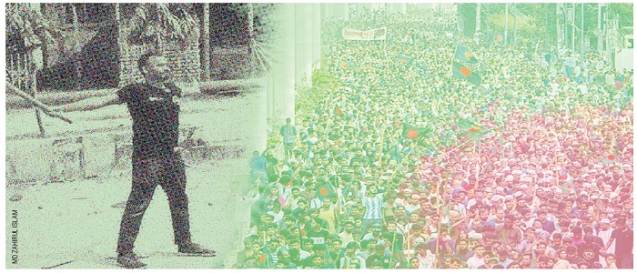

These numbers reflect the deep impact of the struggle for justice and equality. As we present these figures, we remember the courage of those who stood against oppression and honor their enduring legacy.
Tragically, more than 500 students and children have lost their lives in the struggle for justice and equality. We honor their bravery and sacrifice.We honor their bravery..
With over 33,000 injuries reported to date, the movement has seen immense suffering. Our thoughts are with those who have been hurt in the fight for a fairer future.
The crackdown on protestors has led to more than 11,000 arrests and disappearances. We strive to shed light on these injustices and seek accountability.
With over 33,000 injuries reported to date, the movement has seen immense suffering. Our thoughts are with those who have been hurt in the fight for a fairer future.

The 2024 Bangladesh quota reform movement was a series of anti-government and pro-democracy protests in Bangladesh, spearheaded primarily by university students. Initially focused on restructuring quota-based systems for government job recruitment, the movement expanded against what many perceived as an authoritarian government when they carried out the July massacre of protestors and civilians, most of whom were students.Started as a student movement, the movement later escalated into a fully-fledged mass uprising known as the Student–People's uprising.

The protest began in June 2024, in response to the Supreme Court of Bangladesh reinstating a 30% quota for descendants of freedom fighters, reversing the government decision made in response to the 2018 Bangladesh quota reform movement. Students began to feel like they have a limited opportunity based on merit. The protest quickly spread throughout the entire country because of the government's violent response, as well as growing public dissatisfaction against an oppressive government. The situation was further complicated by many other ongoing issues, like the government's inability to manage a prolonged economic downturn, reports of rampant corruption and human rights violations, and the absence of democratic channels for initiating changes.
After the High Court ruled in favor of quotas on 5 June 2024, the students of various universities in Dhaka united to demand quota reform. After the movement was initially started, it was postponed due to Eid al-Adha and the summer holidays. After the holidays, the agitation started again peacefully but gradually became widespread. Initially, the students and teachers of many public universities and other educational institutions joined the movement.Later, the students of private universities also followed suit by joining the public demonstration.Under the banner of Anti-discrimination Students Movement (Bengali: বৈষম্যবিরোধী ছাত্র আন্দোলন), students started the Bangla Blockade.
Peaceful demonstrations by the students restarted on 1 July, while public university teachers declared a strike protesting the new Universal Pension Scheme,causing universities to close. Demonstrations spread nationwide as the movement became headed by a newly formed Anti-discrimination Students Movement, an umbrella organisation for the student protesters. On July 7, protestors launched the nationwide Bangla Blockade, obstructing traffic and rail in major cities and metropolises including Dhaka, Chittagong, Comilla, Jessore, Rangpur, Rajshahi, and Bogura.While the Appellate Division ordered a four-week status quo regarding the quota on 10 July, protesters continued to demand a solution from the government.Protests turned violent for the first time the next day as the police clashed with the students. On 14 July, Prime Minister Sheikh Hasina made controversial remarks about the anti-quota protests, escalating the situation and raising the public's anger. On 15 July, the ruling Awami League solidified its stance against the demonstrations, and the protestors met first violent suppression from the Chhatra League leaving several hundred injured.In response to the Chhatra League attacks, student protesters at Rajshahi University vandalized halls, targeting the room of the President of RU Chhatra League and other members associated with the group.The protesters in Dhaka University removed Chhatra League members from 11 different halls and declared a ban on the pro-quota student organization. At other universities across the country, students expelled Chhatra League members from their campuses, with some members in Chittagong even being thrown from high rooftops by angry protesters during clashes.These actions led to many campuses independently declaring themselves "Chhatra League Free".